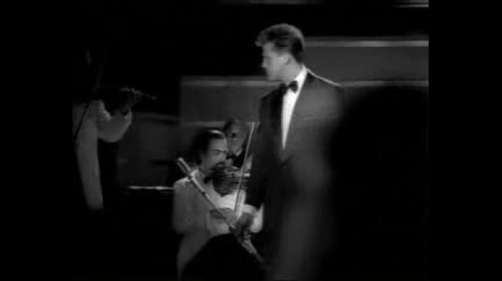

PELÍCULAS
Ya nunca más
Fiebre de Amor
VIDEOS

La Incondicional
Suave
Por debajo de la mesa
Cuando Calienta el Sol
La Fiesta del Mariachi
La Media Vuelta
El Evento load se dispara cuando el documento ha terminado de cargarse!